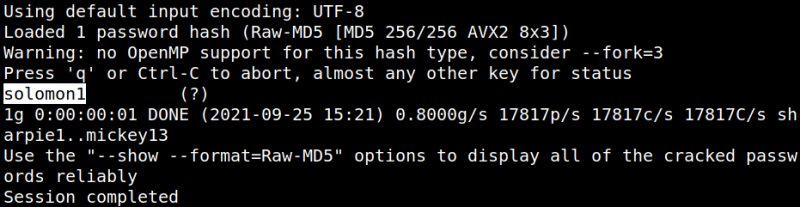

3.3 Decode the hash
On your Kali Machine.
1. Create a file called “hash.txt” and copy the hash into it.
2. Run “john” to decode the hash.
$john
--wordlist=/usr/share/wordlists/rockyou.txt hash.txt --format=Raw-MD5
Output:

Index